Reference
Learning to Code the World: Harness Evolution for Compositional 3D Reconstruction
Developing an evolving harness framework that enables a compact open-source model to GPT-6-Astra-level performance in code-driven reconstruction of editable, compositional, and executable 3D scenes.
Reconstructing editable and compositional 3D scenes from a real image requires jointly reasoning about geometry, object structure, and spatial relationships. We introduce SceneEvolve, a framework that represents 3D scenes as executable code and improves reconstruction by evolving the harness around a small open-source agent.
SceneEvolve combines SceneAct, a compositional semantic action interface built on parameterized primitives, hierarchical composition, and semantic spatial relations, with SceneHarness-RSI, which leverages a stronger teacher agent to iteratively evolve the harness using feedback from development-set reconstructions. Throughout harness evolution, the model parameters, action semantics, and execution backend remain fixed. The resulting harness provides a reusable reconstruction procedure that enables the small open-source model to reconstruct unseen scenes without parameter updates or teacher assistance.
Across two in-domain datasets and one out-of-domain dataset, SceneEvolve with the comparatively compact Qwen3.8-27B model improves all four evaluated reconstruction metrics while reducing mean inference time by 47.0% relative to the base model. More notably, despite relying on a substantially smaller model, SceneEvolve achieves 32.3% higher reconstruction quality than the large proprietary GPT-5.6-Sol model, while reducing mean equivalent deployment cost by 59.8%. Furthermore, the harness evolved using Qwen3.8-27B also generalizes to Kimi-K3, achieving comparable reconstruction performance to GPT-6-Astra.
Compare each reference image with three interactive reconstructions. Drag a model to orbit, scroll to zoom, or pause the shared camera motion to inspect.
“Ours” denotes the harness evolved with Qwen3.8-27B.
SceneEvolve consists of two core components: ①SceneAct, a compact semantic interface from intent to actions; ②SceneHarness-RSI, a teacher-guided recursive harness evolution framework. ③Experiments show that SceneEvolve improves the baseline, surpasses frontier models, and reduces inference time and cost.
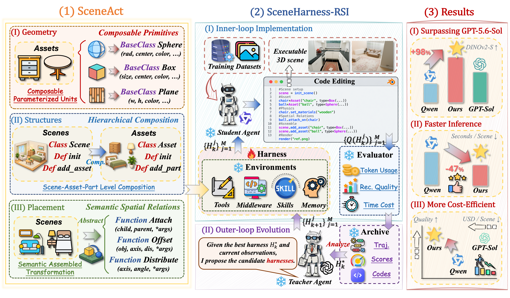
The SceneAct comprises three abstractions: parameterized primitives, hierarchical composition, and semantic spatial relations, which defines the executable interface for frozen student.
SceneHarness-RSI iteratively refines the harness through a propose-execute-evaluate-retain cycle to improve how the student uses SceneAct while keeping the student parameters fixed.
SceneEvolve with Qwen3.8-27B outperforms GPT-5.6-Sol in quality while reducing costs by 59.8% and time by 47.0%. The evolved harness transferring to Kimi-K3 almost compete with GPT-6-Astra.
Across in-domain and out-of-domain datasets, SceneEvolve with Qwen3.8-27B outperforms GPT-5.6-Sol, reducing cost by 59.8% and inference time by 47.0% relative to the baseline. The evolved harness also transfers to Kimi-K3, achieving results competitive with GPT-6-Astra and demonstrating its transferability.
Performance comparison across ScanNet and CA-1M (in-domain) and ARKitScenes (out-of-domain). We report PSNR, SSIM, LPIPS, and DINOv2 similarity. The best and second results are highlighted in bold and underlined.
| In-domain | Out-of-domain | ||||||||||||
|---|---|---|---|---|---|---|---|---|---|---|---|---|---|
| Model | Inference effort | ScanNet | CA-1M | ARKitScenes | |||||||||
| PSNR ↑ | SSIM ↑ | LPIPS ↓ | DINOv2-S ↑ | PSNR ↑ | SSIM ↑ | LPIPS ↓ | DINOv2-S ↑ | PSNR ↑ | SSIM ↑ | LPIPS ↓ | DINOv2-S ↑ | ||
| GPT-6-Astra | High | 10.063 | 0.386 | 0.684 | 0.590 | 10.309 | 0.382 | 0.705 | 0.556 | 9.561 | 0.407 | 0.748 | 0.519 |
| GPT-6-Astra | Medium | 10.143 | 0.383 | 0.684 | 0.579 | 10.433 | 0.378 | 0.711 | 0.557 | 10.177 | 0.423 | 0.732 | 0.528 |
| GPT-6-Astra | Low | 9.888 | 0.385 | 0.701 | 0.596 | 10.108 | 0.372 | 0.691 | 0.552 | 10.245 | 0.403 | 0.712 | 0.475 |
| Claude-Opus-5 | High | 9.174 | 0.352 | 0.735 | 0.438 | 8.781 | 0.368 | 0.749 | 0.441 | 8.551 | 0.389 | 0.751 | 0.417 |
| Claude-Opus-5 | Medium | 9.021 | 0.348 | 0.741 | 0.444 | 8.705 | 0.361 | 0.756 | 0.432 | 8.498 | 0.392 | 0.754 | 0.409 |
| Claude-Opus-5 | Low | 8.742 | 0.337 | 0.747 | 0.416 | 8.566 | 0.355 | 0.753 | 0.419 | 8.287 | 0.374 | 0.764 | 0.391 |
| Claude-Opus-5 | None | 8.463 | 0.329 | 0.759 | 0.398 | 8.318 | 0.346 | 0.769 | 0.423 | 8.146 | 0.358 | 0.771 | 0.356 |
| GPT-5.6-Sol | High | 9.042 | 0.337 | 0.742 | 0.417 | 8.562 | 0.353 | 0.748 | 0.428 | 8.312 | 0.371 | 0.755 | 0.401 |
| GPT-5.6-Sol | Medium | 8.731 | 0.319 | 0.754 | 0.375 | 7.821 | 0.347 | 0.765 | 0.411 | 8.027 | 0.340 | 0.752 | 0.408 |
| GPT-5.6-Sol | Low | 7.945 | 0.307 | 0.756 | 0.382 | 8.294 | 0.338 | 0.757 | 0.416 | 7.942 | 0.314 | 0.776 | 0.349 |
| GPT-5.6-Sol | None | 7.755 | 0.284 | 0.752 | 0.389 | 8.212 | 0.321 | 0.770 | 0.361 | 8.067 | 0.356 | 0.773 | 0.357 |
| Gemini-Flash-3.8 | High | 8.126 | 0.318 | 0.774 | 0.358 | 8.113 | 0.324 | 0.781 | 0.365 | 7.984 | 0.337 | 0.785 | 0.341 |
| Gemini-Flash-3.8 | Medium | 8.004 | 0.311 | 0.782 | 0.361 | 8.154 | 0.319 | 0.779 | 0.358 | 7.846 | 0.330 | 0.792 | 0.334 |
| Gemini-Flash-3.8 | Low | 7.813 | 0.298 | 0.789 | 0.337 | 7.874 | 0.306 | 0.795 | 0.341 | 7.731 | 0.332 | 0.799 | 0.336 |
| Qwen3.8-27B | xHigh | 9.061 | 0.376 | 0.772 | 0.240 | 8.381 | 0.367 | 0.806 | 0.134 | 9.704 | 0.448 | 0.785 | 0.219 |
| Qwen3.8-27B w/ Ours | xHigh | 9.124 | 0.378 | 0.755 | 0.391 | 8.513 | 0.440 | 0.742 | 0.418 | 9.862 | 0.453 | 0.721 | 0.368 |
| Improvement | — | +0.70% | +0.53% | −2.20% | +62.92% | +1.57% | +19.89% | −7.94% | +211.94% | +1.63% | +1.12% | −8.15% | +68.04% |
| Kimi-K3 | High | 9.181 | 0.350 | 0.734 | 0.437 | 8.847 | 0.365 | 0.756 | 0.458 | 8.603 | 0.384 | 0.758 | 0.392 |
| Kimi-K3 w/ Ours | High | 9.547 | 0.381 | 0.712 | 0.513 | 9.718 | 0.454 | 0.722 | 0.534 | 10.029 | 0.469 | 0.716 | 0.504 |
| Improvement | — | +3.99% | +8.86% | −3.00% | +17.39% | +9.85% | +24.38% | −4.50% | +16.59% | +16.58% | +22.14% | −5.54% | +28.57% |
Qualitative comparisons of indoor scene reconstruction with GPT-6-Astra, GPT-5.6-Sol, Qwen3.8-27B and Kimi-K3 on Scannet, CA-1M and ARKitScenes datasets.
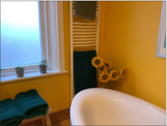
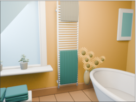
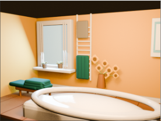
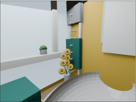
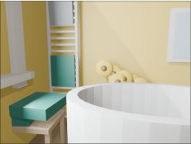
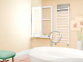
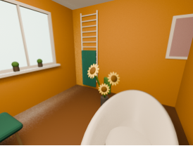
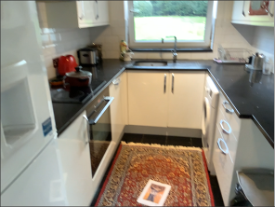
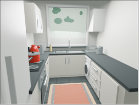
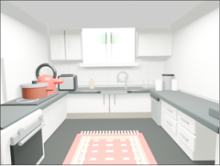
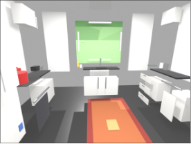
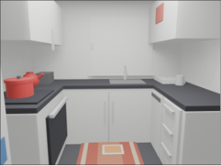
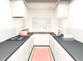
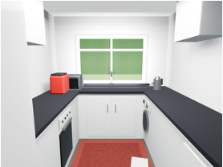
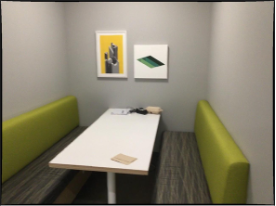
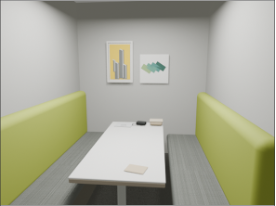
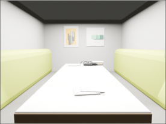
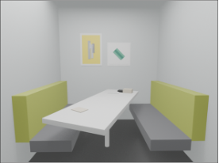
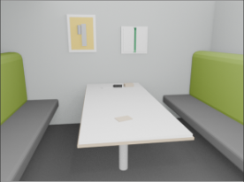
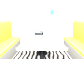
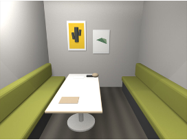
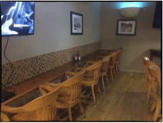
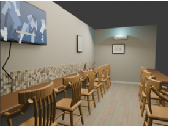
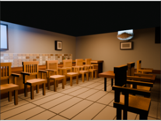
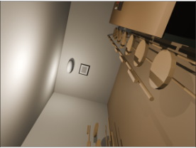
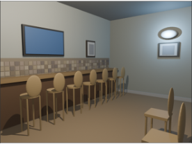
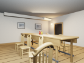
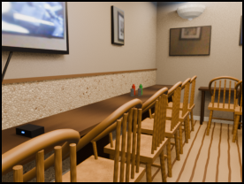
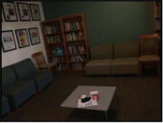
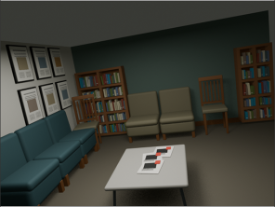
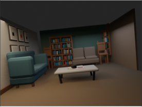
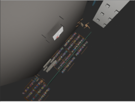
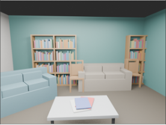
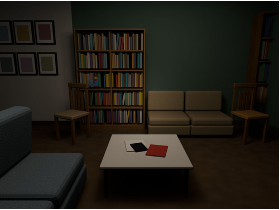
We evaluate SceneEvolve on three in-domain and out-of-domain datasets, and benchmark proprietary multimodal models as zero-shot agents for compositional image-to-3D scene reconstruction.
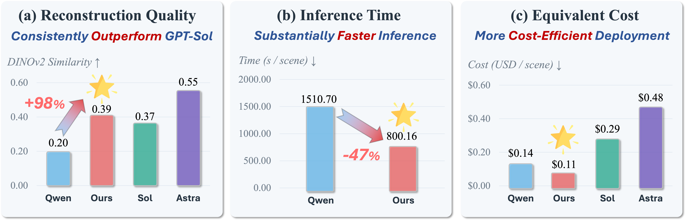
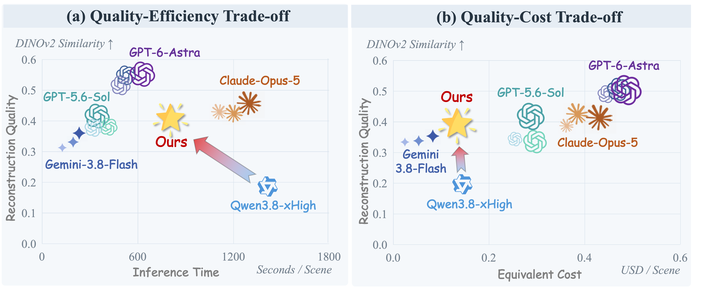
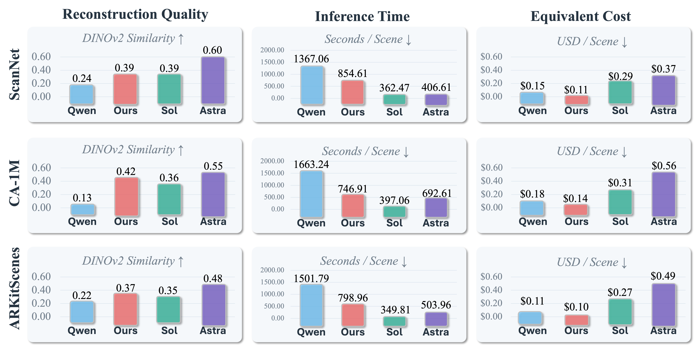
@inproceedings{SceneEvolve2026,
title = {Learning to Code the World: Harness Evolution for Compositional 3D Reconstruction},
author = {Yao Haoyu, Lin Chenguo, Du Ruize, Mu Yadong},
year = {2026}
}